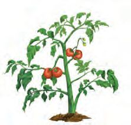
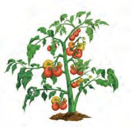
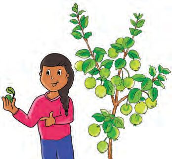
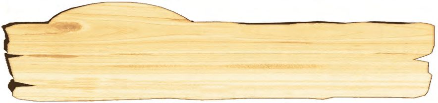
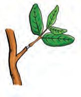
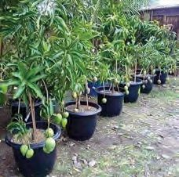
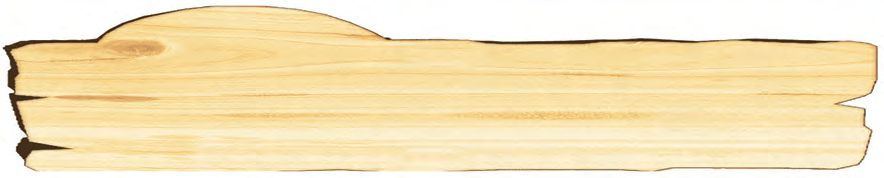
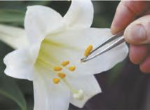
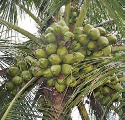
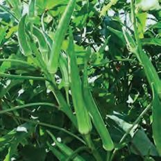

Observe the picture. Which energy forms are utilized here?
u
Light energy
u
Solar energy
u
We make use of different forms of energy in our daily life.
Which are the various situations where heat energy is used? List them.
u
For cooking
u
Would you like to know more about heat energy?
111
Page 8
Figure fig_ch01_p008_01 (Page 8)
Basic Science
You have already observed the changes caused by heat energy on different
states of water.
Ice is the solid form of water. What happens when ice is exposed to air?
What happens when water is boiled? Steam is the gaseous form of water.
When substances are heated, they absorb heat energy. Can heat energy change
the state of matter? What do you think?
Let’s do an experiment to check whether your guess is right.
Melting Ice Cubes
Materials required : 2 Glass tumblers, water at normal temperature, hot
water, ice cubes.
Water at normal temperature
Hot water
Take water at normal temperature in one glass tumbler and hot water in
another one as shown in the picture. Put some ice cubes in both glasses.
Ice cubes in which glass melt faster? Why? Write it in the Science Diary.
Which form of energy caused the change of state of ice?
Didn’t ice get adequate heat from water to melt?
Have you noticed coconut oil solidifying during winter? What is the reason?
Heat is a form of energy that can change the state of matter.
Does heat get transferred from one substance to another?
What is your opinion?
Discuss in your class.
112
Page 9

Figure fig_ch01_p009_01 (Page 9)

Figure fig_ch01_p009_02 (Page 9)
Class - VII
Transfer of Heat
Observe the picture.
The picture shows a pot of rice being
cooked on a gas stove.
How did the rice get the heat energy
radiated from the flame of the gas stove? Complete the flowchart by writing
the different ways by which heat was transferred.
The flame on
the stove
Heat
...........................
Heat
...........................
Heat
Rice
Rice gets cooked when the heat radiating from the flame of the stove is
transferred through the pot and water and reaches the rice.
What do you infer from this?
Transmission of Heat
Transmission of heat refers to the flow of heat from one place to another.
What happens to the pot after turning off the gas stove for a while? Why does
the pot lose heat?
Does the pot alone lose heat? Don’t the substances inside it also lose heat?
Discuss.
Heat is transferred to the surroundings, not only from the pot but also from
the substances inside it. This results in heat loss to the vessel and its contents.
Transmission of Heat in Solids
You know that many things around us exist in solid, liquid and gaseous states.
Is heat transmitted in the same manner in all these things? Write down your
guess.
Let’s do an experiment.
Take a 20 cm long Aluminium rod, some
pins, a candle and a match box from the
Science Kit.
Aluminium rod
Fix the pins at equal distances on the
Aluminium rod using wax as shown in
the picture. Heat one end of the rod with a burning candle. What did you
observe?
113
Page 10
Basic Science
Did all the pins fall down at the same time? Which pin had fallen first? What
causes the pins near the flame to fall first and those farther away to fall later?
Record your observations and inferences in the Science Diary.
This is due to the transmission of heat from the flame through the Aluminum
rod.
Repeat this experiment with Copper and Iron rods.
Heat transmission occurs not only in Aluminium but in other metals also.
Repeat the experiment with a piece of wood and a glass rod.
Discuss and record your observations in your Science Diary.
Conduction
When heat is received at one end of a metal rod, the molecules at that
end receive the heat and transfer it to the nearest molecules. This method
of transmission of heat is called conduction. In solids, heat is transmitted
through conduction.
You have understood that heat is transmitted in metals by the transfer of heat
energy.
Materials that Conduct Heat
Do all materials conduct heat well?
Haven’t you experimented with Aluminium, Copper, wood, Iron and glass
rods? Complete the table by classifying them as substances that conduct heat
well and those that don’t conduct heat well.
Substances that conduct
heat well
Substances that don't
conduct heat well
Haven’t you realised that all solids do not conduct heat well?
Good Conductors and Poor Conductors
Substances which allow heat to pass through them well by conduction are
called good conductors and those substances which do not allow heat to
pass through them well are called poor conductors.
114
Page 11
Figure fig_ch01_p011_01 (Page 11)

Figure fig_ch01_p011_02 (Page 11)
Class - VII
Find out more examples of good conductors and poor conductors based on
your experience and list them.
We make use of good conductors and poor conductors in our daily life.
In the following situations, do we use good conductors or poor conductors?
u
To remove a hot vessel from the stove
u
To make handles of cooking utensils
u
To make cooking utensils
Check the pictures below.
Both good conductors and poor conductors are used in the same vessel.
Explain the reason for this. Find more examples of such vessels and present
them in the class.
Transmission of Heat in Liquids and Gases
Haven’t you understood that transmission of heat in solids takes place through
conduction? By which method does transmission of heat occur in liquids and
gases?
Why do we put the fire right underneath the vessel while cooking? How about
heating the sides of the vessel? What are your responses?
Let’s do an experiment.
Materials required : A transparent plastic jar with a lid, a glass tumbler with
the same diameter as that of the jar, mason pipe, Potassium permanganate,
hot water, cold water.
Make two holes on the lid of the plastic jar. Fix a 10 cm long mason pipe in
each hole in an airtight manner. Take hot water in the glass tumbler having
the same diameter as that of the plastic jar. Add some Potassium permanganate
granules to it.
115
Page 12

Figure fig_ch01_p012_01 (Page 12)

Figure fig_ch01_p012_02 (Page 12)
Basic Science
Take some cold water in the
plastic jar and close it with the
lid fitted with the mason pipe.
Place this plastic jar upside down
over the glass tumbler filled with
hot water containing Potassium
permanganate.
Cold
water
Mason
pipe
Hot
water
What do you observe? Discuss Plastic jar
and record it in the Science Diary.
Glass
tumbler
Does the water in the plastic jar at the top flow down? Can you see the coloured
hot water in the glass tumbler flowing upwards?
What causes the water in the jar at the top to flow down through one pipe and
the water in the glass at the bottom to flow up through the other pipe?
Write your inference in the Science Diary considering the temperature
difference between water in the jar and the glass tumbler.
When hot water flows up through one mason pipe, cold water flows down
through the other pipe. This cold water becomes hot and rises up again. Thus
heat spreads throughout the liquid.
In this experiment, heat was transmitted from hot water to cold water by the
displacement of molecules. Here the heat energy is transferred when molecules
move across. Heat transmission occurs in all liquids by the displacement of
molecules.
Transmission of Heat in Gases
Does transmission of heat occur in gases as in liquids?
Let’s do an experiment.
Materials required: One PVC pipe of 5 cm diameter and 30 cm length, an
incense stick, a match box, a candle.
Make a pencil sized hole at a height of 8 cm on one end of
the PVC pipe. Place a lighted candle on the table. Arrange
the pipe as shown in the figure so that the candle comes
inside the PVC pipe. While arranging the pipe, the portion
with the hole should come at the bottom. Light the incense
stick and watch the smoke rising up. Bring the lighted
incense stick near the hole on the pipe. Observe the
direction of flow of smoke. What change do you observe?
116
PVC
pipe
Page 13
Class - VII
As the air inside the PVC pipe warms up and rises, cool air flows into that
space through the hole. Along with this flow of air, the smoke from the incense
stick also enters. The air, thus entered, also gets heated and rises up. Here
also, heat is transmitted from one part to another by the displacement of
molecules as in liquids. In this way, the heat spreads in the air inside the pipe.
In both the experiments you have conducted, transmission of heat was due to
the motion of molecules, wasn't it? വികിരണം (Radiation)
Convection
Convection is the method of transmission of heat in gases and liquids by
the displacement of molecules.
What is the role of molecules in the transmission of heat by conduction and
convection?
Here the molecules serve as the medium.
Can heat be transmitted without the help of a medium?
You know that the Earth gets heat mainly from the Sun. How does the heat
from the Sun reach the Earth? We also know that there is a vacuum area
between the Sun and the Earth. This vaccum area is spread over 15 crore km.
Does heat from the Sun reach the Earth by conduction or convection? There is
no medium between the Earth and the Sun. Therefore heat cannot be
transmitted by conduction or convection. Still, we know that heat from the
Sun reaches the Earth. How does this happen?
Radiation
Radiation is the method by which heat is transmitted without the help of
a medium. Heat is transmitted to all directions through radiation. Heat
from the Sun reaches the Earth by radiation. White or smooth surfaces
reflect radiant heat more than black or rough surfaces.
Write down some situations where heat is transmitted by radiation.
u
Heat reaches down from a glowing filament bulb.
u
Don’t you adopt various methods at home to keep cooked food hot for a long
time? Which are the commonly used devices to reduce heat loss? List them.
117
Page 14
Figure fig_ch01_p014_01 (Page 14)
Basic Science
Hot Box
What is hot box used for?
A hot box is a system used to reduce the use of cooking
fuel and to keep cooked food items from losing heat. In
this, food items can be kept without losing heat for an
average of 8 hours. If we place half cooked rice inside
this box, the fuel required to cook rice can be reduced
almost by half. You know that thermocol is used in the
hot box. As it is a poor conductor, the heat loss through conduction is reduced.
Heat loss through convection is reduced as the hot box is kept closed.
How is heat loss avoided in a hot box? Discuss and write it in the Science
Diary.
Ice Box
You know that ice is used to preserve food items like fish. Ice box is used to
keep ice from melting too quickly. Shall we make an ice box?
Materials Required: A small box, thermocol, glue, white enamel paint.
Cut the thermocol and glue it inside the small box. The thermocol should be
glued on the sides, bottom and the lid. Apply white enamel paint inside and
outside the box. Put the ice cubes in the box and close it. Observe how long it
can keep ice cubes from melting. Find out the various situations in which such
ice boxes are used. Discuss in the class, how the ice box minimizes all the three
types of heat loss.
Thermal Expansion of Solids
Do solids expand when heated? Let’s do an experiment.
Materials required: A battery, a bulb, a connecting wire, two Aluminium
plates, a candle, a matchbox.
As shown in the figure, arrange an electric circuit on a board using battery,
bulb, connecting wire and the two Aluminium plates.
The Aluminium plates should be placed on both sides of the wire very closely,
without touching each other. Heat the Aluminium plates using the candle.
What did you observe?
118
Page 15

Figure fig_ch01_p015_01 (Page 15)
Class - VII
Didn’t the bulb glow? Why did the bulb glow? Note down your opinion.
What happened to the Aluminium
Bulb
plates when they were heated? When
heated, they expanded, came into
contact with each other and
Battery
completed the circuit. Now, remove
Aluminium plates
the candle and observe. What
happened to the glowing bulb? Why?
Why did the circuit become open on
cooling?
Write down your inference from this experiment.
When heated, the Aluminium plates get expanded, the circuit is completed
and thus the bulb glows. When heat is lost, the plates contract and the circuit
is disconnected. So the bulb goes off.
Repeat the experiment using Copper and Iron plates instead of Aluminium.
Record the findings in the Science Diary.
Thermal Expansion of Solids
Solids expand when heated and contract on cooling.
Which are the situations you have noticed in daily life related to thermal
expansion of solids? Write them in the Science Diary.
Haven’t you seen the wires on the electric pole for distributing electricity?
Why do these wires get sagged in summer?
Let’s find out the reason behind this by analysing the following situations.
u
A very tight pen cap is removed by heating gently.
u
The tight lid of a steel tiffin box is opened by gently heating.
Analyse these contexts discuss and note down your findings in the Science
Diary.
Do Liquids Expand When Heated?
Let’s find out through an experiment.
Materials Required: An injection bottle, a cork that fits the injection bottle, an
empty refill tube of a pen, a bowl, potassium permanganate, hot water, water
at normal temperature.
119
Page 16

Figure fig_ch01_p016_01 (Page 16)
Basic Science
Fill the injection bottle with water
and add some Potassium
permanganate granules. Make a
small hole in the rubber cork. Fix
the refill tube in the hole. Close
the injection bottle with the cork.
Water at
normal
temperature
Tie a thread to mark the water
level in the refill.
Hot
water
Take hot water in the bowl and place the injection bottle in it.
What happens to the water level in the refill? Why?
Wasn't this change caused by the expansion of water due to the heat received?
If the water in the injection bottle cools down, will the water level return to its
initial position?
What is your inference from this experiment?
The water in the bottle expands and rushes into the refill. Hence the water
level rises. Water contracts when it cools. Hence the water level is restored.
Thermal Expansion in Liquids
Liquids expand on heating and contract on cooling.
Thermal Expansion of Gases
When heated, do gases undergo the same changes as in solids and liquids? Do
gases also expand when heated?
Let’s do the experiment and find out.
Materials Required: An Aluminium lamp, a plastic tube, a board, coloured
water, hot water, cold water.
Fix the plastic tube on the Aluminium lamp as shown in the figure. Fix the
remaining part of the tube in U shape on a board. Pour two or three drops of
coloured water into the plastic tube.
Place the Aluminium lamp in hot water. What happens? Why?
Now place the Aluminium lamp in cold water. What do you observe? Why?
When the Aluminium lamp becomes hot, doesn’t the air inside it also become
hot? As this hot air expands, the coloured water in the tube moves upwards.
If so, what happens to the gases when they become cool?
As the Aluminium lamp cools down, the air contracts, causing the colored
water to move back in the tube and reach its initial position.
Thermal Expansion of Gases
Gases expand on heating and contracts on cooling.
Temperature
You know that units are used to express the measure of length, width, height,
area, volume and so on. Similarly, units are used to indicate the
temperature also.
Temperature is the term that indicates the degree of hotness. The
units used to indicate temperature are degree celsius (0C) and
degree fahrenheit (0F).
In your daily life, don’t you need to know the temperature?
What happens to body temperature when you have a fever?
Haven't you checked your body temperature at a hospital?
Which instrument is used for this?
A clinical thermometer is used to measure body temperature.
Normal temperature of human body is 370C (98.60F).
121
Clinical
Thermometer
Page 18

Figure fig_ch01_p018_01 (Page 18)
Basic Science
Observe a clinical thermometer.
Find out the degrees at which the measurements start and end. Write them down
in the Science Diary. Why is such a limit fixed? With the help of the teacher, find
the body temperature of your classmates using a clinical thermometer and record
the readings.
Laboratory thermometer is an instrument used in a laboratory to measure
temperature.
Let’s do an experiment with a laboratory thermometer.
Laboratory thermometer
Heat water in a beaker. Using a thermometer, find the temperature in every 5
minutes and tabulate it.
Time (minutes)
Temperature (degree celsius)
5
10
15
20
Atmospheric Temperature
When does the temperature of the atmosphere rise? During the day or at
night? Why?
Do we experience the same temperature in the morning and at noon? What
about the evening?
Can changes in atmospheric temperature cause natural phenomena?
The sand and the water on the Earth get heated due to the heat from the Sun.
If soil and water are placed under sunlight at the same time, which one will
get heated faster? What is your guess?
Let’s do an experiment to check if your guess is correct.
Be sure to do the experiment on a sunny day.
Materials Required:
water, sand.
Two glass tumblers, two laboratory thermometers,
122
Page 19

Figure fig_ch01_p019_01 (Page 19)
Class - VII
Take sand in one glass tumbler
and water in another as shown
in the figure and check the
temperature with a laboratory
thermometer. Place both the
glasses in the sun. Then measure
the temperature of sand and
water with a thermometer at an
interval of 20 minutes and record
it in the table.
Thermometer
Thermometer
Water
Sand
Temperature
Time (minutes)
Sand
Water
20
40
60
Which one gets heated faster? Sand or water?
Now move both the glasses from the sun to a shade. Measure and record the
temperature at an interval of 20 minutes.
Temperature
Time (minutes)
Sand
Water
20
40
60
Which one cools faster? Sand or water?
Analyse the tables. Record your findings in the Science Diary and discuss in
the class.
Land Breeze and Sea Breeze
Haven’t you found that water heats up slowly and sand heats up quickly?
Haven’t you understood that hot sand cools down quickly and hot water
cools down slowly?
123
Page 20
Figure fig_ch01_p020_01 (Page 20)

Figure fig_ch01_p020_02 (Page 20)
Basic Science
There is both land and sea on the Earth. Which one heats up faster in sunlight?
Land or sea?
Which will cool down faster at night? Compare the findings from the previous
experiments and form an inference.
Sea Breeze
Land heats up and cools
down faster than water.
Therefore, the land is
warmer than the sea
during day time.
The air just above the land
gets heated. This air
expands and rises up. The
Sea Breeze
air over the sea is cooler
compared to that over the
land. As the warm air over the land rises up, the cold air over the sea moves
towards this place. Thus, sea breeze is formed.
What about night?
Is the air cooler at night over the land or sea?
Land Breeze
Land cools faster than sea. So, the air over the sea is relatively warmer.
Therefore, it will be the air
above the sea that is more
expanded. Then the cold
air above the land flows
towards the sea. This
causes the land breeze.
Haven’t you understood
that sea breeze and land
breeze are natural
Land Breeze
phenomena associated
with the temperature of the sea and the land? Collect news reports and
pictures related to such natural phenomena and prepare a journal.
124
Page 21
Figure fig_ch01_p021_01 (Page 21)
Class - VII
Let’s Assess
1. Consider some situations in everyday life.
u
u
Tightly bound electric wires get sagged in summer.
One end of a PVC pipe is heated and the end of another pipe of
the same diameter is inserted into it to join them.
a. Which property of matter with respect to heat is evident in the above
two cases?
b. Based on this, can you explain why a fully inflated balloon bursts
when exposed to sunlight?
2. Observe the arrangement of an experiment shown in the picture.
An injection bottle fitted with a plastic tube is placed in a beaker of hot
water. The tip of this tube is inserted into the hole at the bottom of another
jar filled with water.
a. What do you observe?
b. What inference can be drawn from this?
3. Classify and tabulate the following materials on the basis of thermal
conductivity.
Iron, Paper, Bakelite, Copper, Wood, Steel, Aluminium, Cloth.
125
Page 22
Basic Science
4. Haven't you noticed the utensils used for cooking? What is the difference
between the materials used to make the utensil and its handles? Explain
this on the basis of thermal conductivity.
5. Hot tea of same quantity is kept in an open steel tumbler and in a closed
glass tumbler of same size. Tea in which tumbler stays hot longer? Explain
your finding on the basis of heat transmission.
Extended Activities
Dismantle a thermoflask with the help of elders. Examine whether it has
the following mechanisms to prevent heat transmission.
Method of
heat transmission